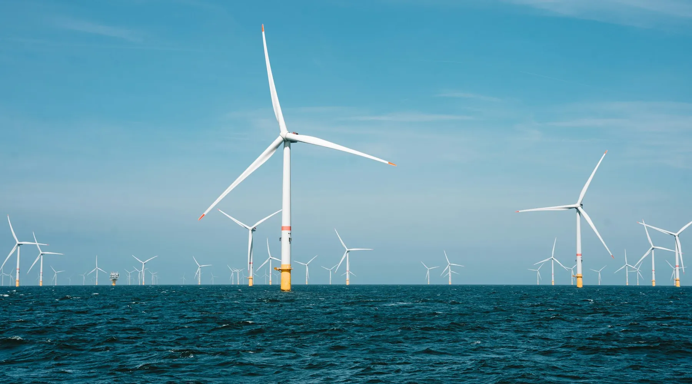
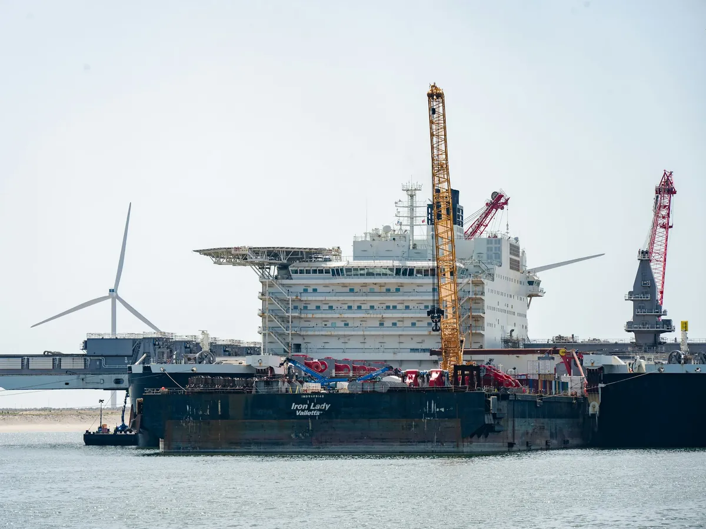
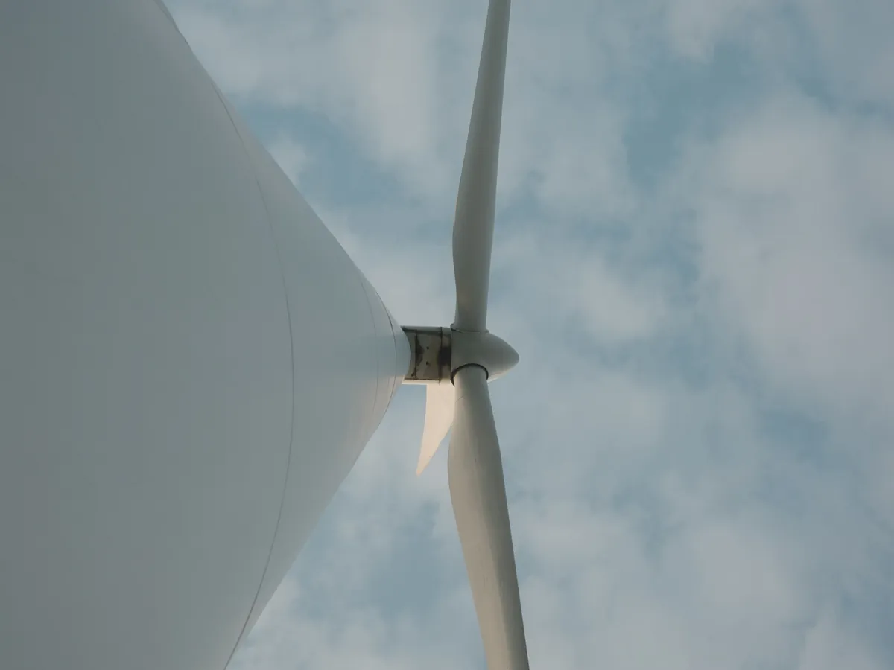
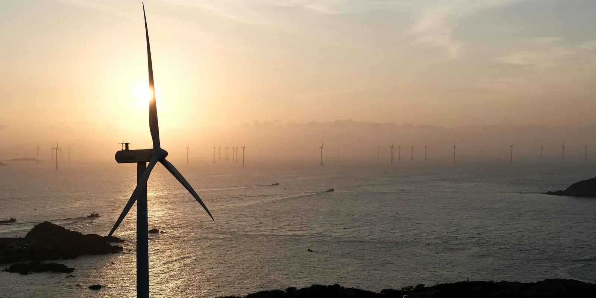

380 MW nobody would finance any more
The permit was granted, the wind resource confirmed — and still nothing was being built. Here is how we put Nordsee Array 04 back on track, and why it was commissioned four months ahead of contract.

- Installed capacity
- 380 MW
- Turbines of 8.3 MW
- 46
- Cost per MWh against the original plan
- −11%
- Households supplied
- 410,000
Where it stood
By late 2020 the consortium holding the concession had everything it needed on paper: an operating permit, eighteen months of wind measurements and a reserved grid connection. What it no longer had was a financing plan that worked.
Between filing and the construction tender, steel had risen 34% and the cost of capital had doubled. The original model, built around sixty 6.3 MW turbines, now returned an internal rate below the lenders' threshold. Two banks had walked away. The project was about to be shelved.
What we looked at first
Our view, on picking up the file, was that the problem was not the resource but the layout. An offshore farm is expensive in foundations, cabling and vessel days — three items driven far more by the number of machines than by total capacity.
- We went back to the eighteen months of lidar data and rebuilt the resource model cell by cell, instead of relying on a site average.
- We tested eleven layouts, modelling the wake losses between machines that the original plan handled as a flat allowance.
- We reopened negotiations on the export substation, originally sized for a flatter output curve.

The call
Move from sixty 6.3 MW machines to forty-six 8.3 MW machines. Installed capacity stayed at 380 MW, but foundations dropped by 23%, inter-array cabling by 19%, and — most importantly — vessel days, the most volatile line in the budget, by almost a third.
The rebuilt wake model also showed that the tight spacing of the original layout was costing 4.1% of output. The new arrangement, opened up along the prevailing wind axis, recovered most of it.
-
Q1 2021 — Remodelling
Resource rebuilt from raw lidar data, eleven layouts tested.
-
Q3 2021 — Financial close
Fifteen-year power purchase agreements signed with three industrial buyers, covering 62% of expected output.
-
Q2 2022 — Foundations
All 46 monopiles installed across two weather windows instead of three.
-
Q4 2023 — Partial commissioning
The first 28 machines start exporting to the grid.
-
Q2 2024 — Handover
Full array in operation, four months ahead of the contractual date.
"We had a permitted project that nobody would fund any more. Alizé didn't try to sell us a turbine — they started by redoing our wind calculations. That is what unlocked the file."
The outcome
The array produces 1,460 GWh a year, 6% above the original plan's forecast for the same installed capacity. Generation cost came in 11% under the original budget, and the agreements signed in 2021 secure revenue through to 2036.
We have operated and maintained the site since commissioning, with 97.4% availability over the first full year.


Is your project really stuck?
In half the files we are handed, what blocks the project is not the resource but a starting assumption nobody has reopened in three years.